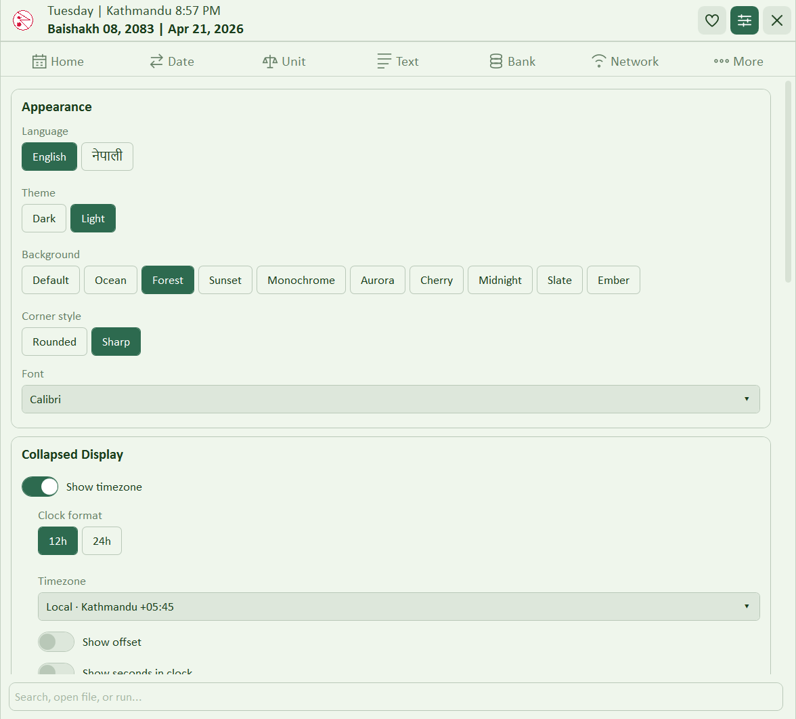

Every tab. Every tool.
NepDate Widget is organized into seven tabs. Each one focuses on a single workflow so the UI stays uncluttered. Right-clicking the widget anywhere opens a quick-access menu to any tool. RunBox is a separate global launcher — press the configurable hotkey from anywhere in Windows to run a command without opening the widget at all.
Two lines on the taskbar. Everything else one click away.
The mini bar sits above or alongside the taskbar, always readable and never in the way. Click it to expand the full widget. Right-click from anywhere to jump directly to any tool without opening the full UI.
Mini Bar
The collapsed widget sits where your taskbar would, showing the current Bikram Sambat and Gregorian date and time. Two configurable lines that you can tailor down to just what matters.
- Time row with 12h / 24h clock, timezone label, and UTC offset
- Date row with day of week, BS date, and AD date
- Each element toggles independently from Settings
- Click anywhere on the bar to expand the full app

Bikram Sambat month grid
A full BS month with the matching English day numbers shown alongside each cell, plus tithi, public holidays, and festivals highlighted. Today is marked with your accent color, and the footer shows the current fiscal year and quarter. The header also surfaces a live countdown to the next public holiday so you always know how far away Dashain or Tihar is.
- Navigate with arrow buttons or mouse wheel
- One-click Today jumps back to the current month
- Upcoming holiday countdown right in the header (toggleable, hover for the next year of holidays)
- Right-click any cell to copy the date in four formats (BS, BS long, AD, AD long)
- Days with a note show a colored dot; days with a reminder show a red dot — both appear when a day has both
- Click any day to open a popup showing its note and reminders — edit or delete each item inline without opening the More tab
- Daily events notification on the first launch of each day, listing today's festivals and observances
- Tithi and festival data sourced from authoritative BS calendars

Run anything without leaving the keyboard.
Global hotkey command launcher with history
Press the configurable hotkey (default Ctrl+Shift+Space) from anywhere in Windows to summon a compact run bar. Type a program name, file path, URL, or just a search term and press Enter.
- Runs commands exactly like the Windows native Run dialog
- Detects URLs and opens them in your default browser
- Falls back to a Google search for anything that doesn’t match a command or URL
- Remembers the last 50 entries; navigate with arrow keys, filter by typing, Tab-complete from history
- Hotkey is fully configurable from Settings
Convert. Add. Compare. Across timezones.
Three tools in one tab: instant BS ↔ AD conversion in both short and long formats, a days calculator for adding or finding the gap between BS dates, and a two-way timezone converter with labeled UTC offsets.
BS ↔ AD conversion
Type a date in either calendar and the result appears immediately in both short and long formats. The widget remembers the last direction you used so you pick up where you left off.

Add, subtract, and difference
Add or subtract any number of days from a BS date and get the result instantly. Or enter two BS dates and see the gap broken down into years, months, days, and total raw days.

Timezone converter
Compact labeled dropdowns like Nepal +05:45 and Singapore +08:00.
Pick any two system timezones, type a time, and the conversion appears instantly. The
Swap button reverses direction in one click.

EMI and interest, in your calendar.
Calculate monthly loan repayments with a full amortization schedule tagged to BS dates, or model interest across multiple rate periods for loans that changed rates mid-term.
Loan EMI with full schedule
Enter loan amount, BS start date, annual rate, and tenure in months. The widget computes monthly EMI, total interest, and total payment, then shows the year-by-year and month-by-month amortization breakdown.
- Year rows expand to monthly detail
- Each row tagged with its BS month start
- Both BS and AD dates respected

Multi-period simple interest
Enter principal and a global From / To date range, then add as many rate periods as needed. Each row carries its own start date and annual rate. The Add Period button auto-fills the next start date to the first day of the following month.
- Per-row interest breakdown plus a grand total
- Supports rate changes mid-loan
- Switch freely between BS and AD input

Password, word count, Preeti ↔ Unicode, script.
Four utilities in one tab. Generate strong passwords with live strength feedback, count words and characters in both Nepali and English, convert between Preeti legacy encoding and Unicode Devanagari, and switch between Devanagari and Romanized scripts — all with file support where it matters.
Generator with live strength meter
Adjustable length, with toggles for A–Z, a–z, 0–9, symbols, and Nepali characters. Paste any password into the strength checker for live feedback against the standard rules.

Word and character count
Paste any text and get an instant breakdown of words, characters with and without spaces, sentences, and lines. Works on both Nepali and English text.

Preeti → Unicode conversion
Converts text and entire documents between legacy Preeti font encoding and proper Unicode Devanagari — the most practical Nepali encoding problem there is.
- Paste inline for instant conversion in either direction (Preeti → Unicode or Unicode → Preeti)
- File conversion: drop a .txt file, pick direction, convert and save — handles entire documents in one step
- Essential for migrating old Preeti-encoded content to any Unicode-aware system

Devanagari ↔ Romanized
Convert Nepali text between Devanagari and Romanized script in either direction. Works inline for quick snippets or across an entire file.
- Roman → Devanagari and Devanagari → Roman, switchable mid-session
- File conversion: load a .txt file, convert, and save — no copy-paste marathon
- Handy for posts, documents, and form fields that only accept one script

Six network tools without leaving the widget.
My IP, Ping, IP Scanner, Traceroute, Whois, and DNS Lookup. All baked in. No third-party installs needed.
Public and private addresses at a glance
See your public IPv4 and IPv6, private IPs across all active interfaces, and ISP info — all on one screen. No browser tab required.
- Public IPv4 via ipify, public IPv6 where available
- All active local interfaces listed with names

Ping any host
Type a host, set the count, and ping. Each round trip prints with TTL, plus a clean Sent / Received / Lost summary and Min / Max / Avg RTT.
- Supports IPv4 and IPv6
- Configurable packet count
- Output styled like a real terminal

Scan your whole subnet in seconds New
Parallel-pings every host on your local subnet (auto-detected, up to /24) and builds a table of every device that responds. Hostname resolution uses DNS with NetBIOS fallback, MAC address via ARP, and manufacturer from the OUI database.
- Up to 64 parallel pings — finishes a /24 in a few seconds
- IP, hostname, MAC, manufacturer, inferred device type (Router, This PC, printer, etc.)
- Marks your own machine and the gateway automatically
Traceroute New
Shows the network path to any host hop by hop. Each hop shows IP, hostname if resolvable, and round-trip time.
- Full per-hop breakdown
- Identifies high-latency hops at a glance
Whois New
Look up registration and ownership records for any domain or IP block directly from the widget.
- Registrar, registration and expiry dates
- Name servers and contact details
DNS Lookup New
Resolve hostnames and inspect DNS records. Supports A, AAAA, MX, TXT, CNAME, and NS queries.
- Multiple record types in one query
- Results displayed as a clean, readable table
Local Nepali units — area, weight, and script.
Three modes in one tab: land area conversion with traditional Nepali units, weight and volume with standard Nepal Weights & Measures Act values, and Devanagari ↔ Romanized script conversion.
Bigha, Kattha, Dhur, Ropani, Aana, Paisa, Dam, Khetmuri
Convert between traditional Nepali land area units and Sq. Metres and Sq. Feet. Includes Khetmuri, the Terai synonym for Kattha used across many districts. Pick From and To, type the value, get the result.

Dharni, Pawa, Mana, Pathi, Muri — local & metric
Convert between traditional Nepali weight and volume units using standard Nepal Weights & Measures Act values. Dharni, Pawa, Mana, Pathi, and Muri converted to and from kg, grams, and litres.

Devanagari ↔ Romanized Also in Text tab
The same script converter available in the Text tab is also right here in the Unit tab so you can stay in one place. Switch direction mid-session, convert inline.
- Roman → Devanagari and Devanagari → Roman
- Results update as you type
- Copy output with one click
Documents, notes, and reminders.
Everything that doesn’t fit a single tool: attach and organize files with tags, write short notes tied to BS dates, and set recurring reminders that survive restarts. All stored locally on your machine.
Attach and organize files locally
Store references to frequently used files (PDFs, images, Word, Excel) directly in the widget. Add a title, tags, and optional notes to each entry. Search by title or tag to find files instantly.
- Open the file in its default app with one click
- Jump directly to the containing folder in Explorer
- Files are copied into the app’s data directory and organized automatically
- The Documents folder is pinned to Windows Explorer Quick Access on startup, so it appears in every file-upload dialog sidebar
Quick local notes, pinned to BS dates
Keep short notes alongside your calendar. Each note is tied to a BS date and shows as a dot on the calendar grid. Stored locally, no sync, no account.

One-shot or recurring
Pin reminders to BS dates with optional time and recurrence (daily, weekly, monthly, yearly). Edit or delete inline from the More tab or directly from the calendar day popup. They survive app restarts.

Deep customization, zero friction.
Appearance, behavior, calendar display, font, timezone, mini bar toggles, and RunBox hotkey — every preference persists across restarts.

20 color presets
Forest, Ocean, Default, Sunset, Cherry, Aurora, Midnight, Slate, Monochrome, Ember — each available in light and dark. One click switches the full palette including accent, background, and surface tones.
Font selection New
20+ font choices. Segoe UI, Calibri, Verdana plus embedded fonts that work on any machine regardless of what’s installed: Inter, IBM Plex Sans, Roboto, Noto Sans, Cascadia Code, Poppins, Montserrat, Lato, Nunito, Rubik, and more.
Calendar display New
Toggle each calendar element independently: English day numbers, Saturday highlights, Sunday highlights, tithi, festival labels, and public holiday highlights. Pick a holiday accent color from 12 options (Red, Orange, Pink, Purple, Blue, Teal, Green, Yellow, Amber, Cyan, Indigo, Brown).
English / नेपाली
Switch the entire UI between English and Nepali instantly. Labels, dates, tool names — everything switches in one click. No restart needed.
RunBox hotkey
Configure the global shortcut that summons the RunBox launcher from anywhere in Windows. Default is Ctrl+Shift+Space. Record any combination from the Settings panel.
Notification settings
Set how long reminder notifications stay on screen (5–60 seconds) and toggle the notification sound on or off.
Corner style & transparency
Rounded or sharp corners to match your taskbar and Windows theme. Optionally enable transparent when collapsed so the mini bar blends into the taskbar background.
Startup & animations
One toggle to launch with Windows. Animations can be disabled independently for a snappier feel on older hardware. Autostart is enabled by default on first launch and stays in sync with the registry.
Timezone & mini bar display
Choose which timezone to show on the mini bar. Toggle the timezone label, UTC offset, day of week, English date, and 12h / 24h clock format independently. The holiday countdown banner is also toggleable from here.
Want this in your own .NET app?
Every BS computation in this widget runs on NepDate, a zero-allocation Bikram Sambat library for .NET.